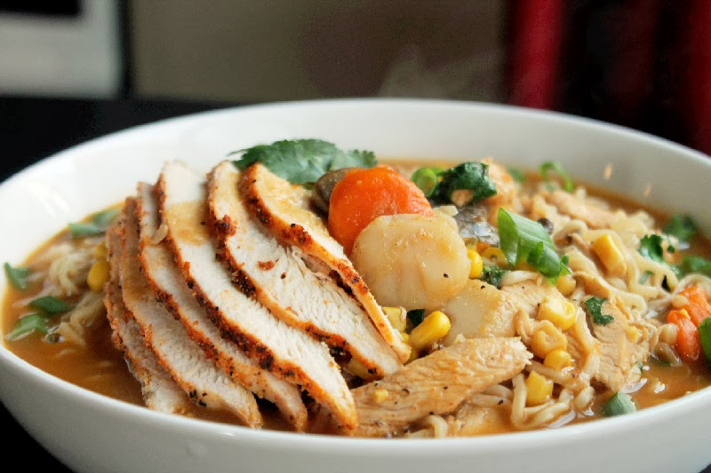

Back to Recipes Index
Chicken Ramen

Description
This chicken ramen recipe is a comforting and flavorful dish that combines tender chicken, aromatic broth, and fresh vegetables in a steaming bowl of ramen noodles.
Ingredients
- 1.25 litres chicken stock
- a thumb-sized piece ginger shredded
- 1 carrot
- 1 red chilli deseeded and sliced
- 1 clove garlic thinly sliced
- 1 tbsp soy sauce
- 2 skinless chicken breasts
- 1 tsp flavourless oil
- 300g egg noodles
- 1 pak choi quartered lengthways
- 2 handfuls kale chopped
- a small bunch coriander
- ½ red onion very thinly sliced
- 1 lime juiced
Instructions
- Put the chicken stock into a large pan with ¾ of the ginger and red chilli, all of the garlic and the soy sauce, and bring to a boil. Cover and simmer gently for 15 minutes.
- Meanwhile, put the chicken breasts between two pieces of clingfilm and gently tap with a rolling pin until an even 1cm thickness. Season well and drizzle with a little oil. Heat a griddle pan over a medium-high heat and cook the chicken for 4-5 minutes on each side or until cooked through and charred. Rest for 5 minutes on a plate under foil, then slice.
- Add the noodles and pak choi to the broth, and simmer for 2 minutes, then add the kale and simmer for a further minute.
- Use tongs to divide the noodles and veg between 3 wide bowls. Ladle over the broth, divide the chicken and put on top with the remaining ginger and chilli, and sprinkle over the coriander, red onion and lime juice.